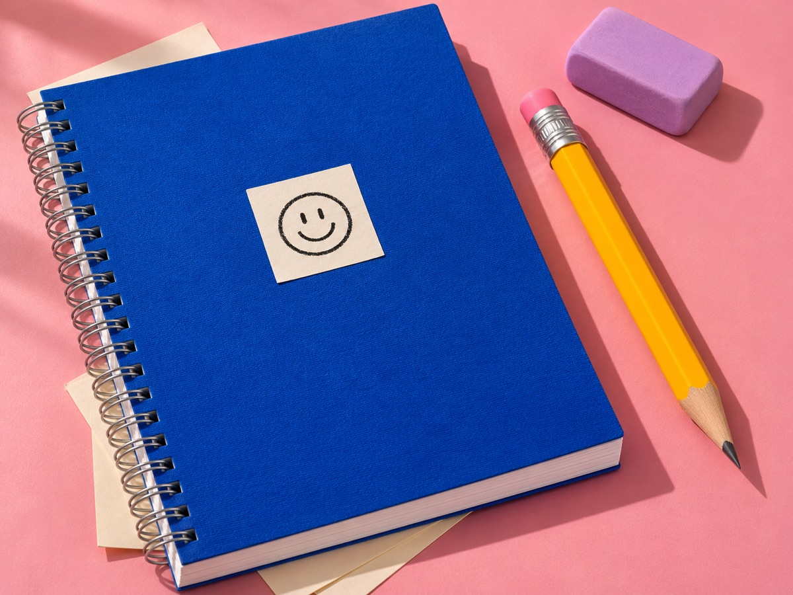

Room to
be curious.
Nice Studio is an educational center for learners of all ages. Bring a question, try an idea, and see what you discover.
Meet the studio
About the studio
A good question belongs to everyone.
At Nice Studio, there's room for the first “why?” and the one you've been wondering about for years. Our starting point is simple. Pick something that interests you and give yourself time to explore it.
Give curiosity a try.
Choose a small experiment to try with things you have nearby.
Make a paper bridge
Set two books a handspan apart. Lay a sheet of paper across the gap and see how many coins it holds. Fold the same sheet like an accordion and try again. What changed?
Look a little closer
Choose an everyday object and sketch it from memory. Now put it in front of you and draw it again. Circle one detail you only noticed the second time.
Tell a story in three frames
Fold your paper into thirds. Draw an object in the first panel, give it a problem in the second, and show how the story ends in the third. Can someone follow your story without words?